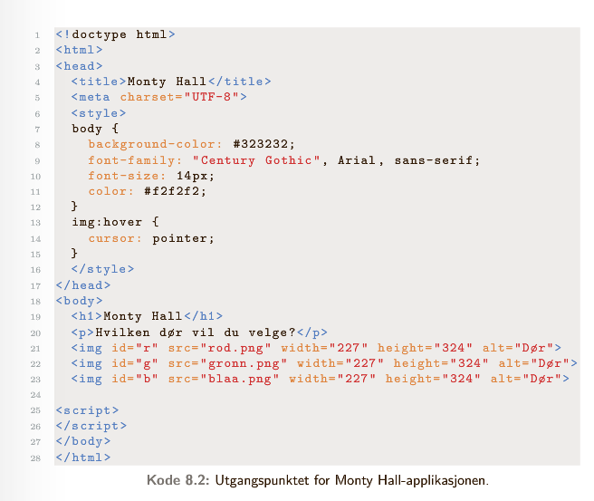
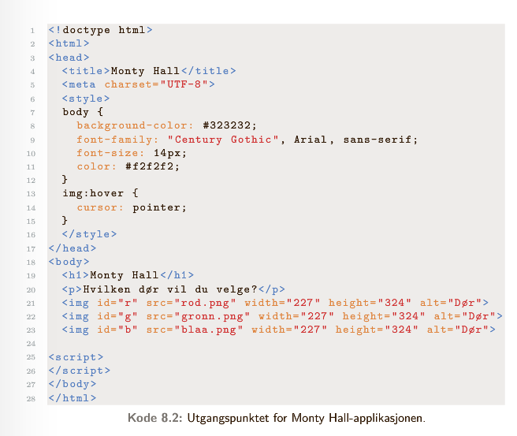

I 8.1 var det alltid samme objekt vi klikket på og som endret: vi klikker på teksten og endrer samme tekst. Det går også an å knytte hendelsen til ett objekt og resutlatet til et annet. La oss illustrere med et eksempel: Monty Hall
I Monty Hall får spilleren presentert tre dører. Bak to av dørene står det en geit, bak den siste døra står det en bil. Spilleren vet ikke hvilken dør som inneholder bilen.
Spillet foregår slik:
Vi opererer først med en veldig forenklet versjon, der vi kun undersøker hvilken dør som åpnes.
Her er altså lytteren knyttet til den døra spilleren velger (trykker på). Selve hendelsen skjer derimot i den døra som åpnes. For at dette skal fungere, må vi vite hvilken dør som er valgt. Dette gjør vi ved å angi argumentet e i funksjonen som sjekker dør, der e representerer hendelsen (event), i dette tilfellet hvilket element som er valgt:
function sjekkDor(e){
console.log(e.target) // logger html-koden for bildet som er valgt
console.log(e.type) // logger hendelsen (click)
}
Oppgave 8.5 til 8.8 s. 131 dekker også dette
Nettsiden inneholder tre dører som kan velges
Hent inn de tre dørene som variabler i script og legg til lyttere
Når en dør velges, skal funksjonen sjekkDor kjøres. Her vil vi finne id'en til døra
Til slutt skal vi logge id'en til døra som åpnes.
Dersom du vil prøve deg videre:
1. La bilen ligge bak en tilfeldig dør (bruk tilfeldige tall mellom 0 og 2 (0 = rød, 1 = grønn, 2 = blå)) og geiter bak de to andre. Å åpne døra vil si å bytte ut bildet av en dør med enten geita eller bilen. Dersom bildet er en geit, skal du skrive til skjerm "Gratulerer, du vant en geit!" og dersom bildet er en bil, skal du skrive til skjerm "Gratulerer, du vant en bil!".
2. Når brukeren velger en dør, skal denne ikke åpnes, men du skal åpne en av dørene med geit bak. Brukeren skal deretter få velge dør på ny. Åpne denne døra ved å bytte ut bildet med enten geit eller bil, avhengig av hva som ligger bak døra
 
